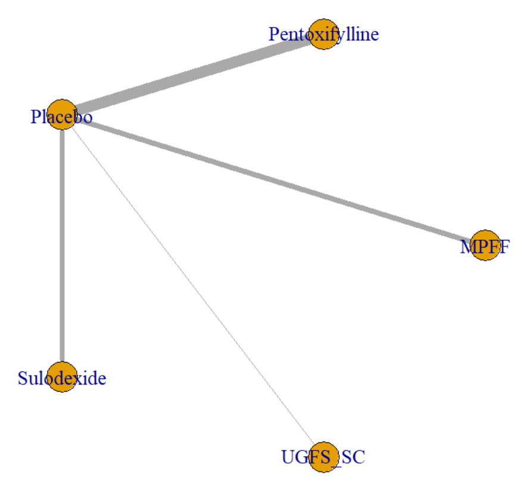
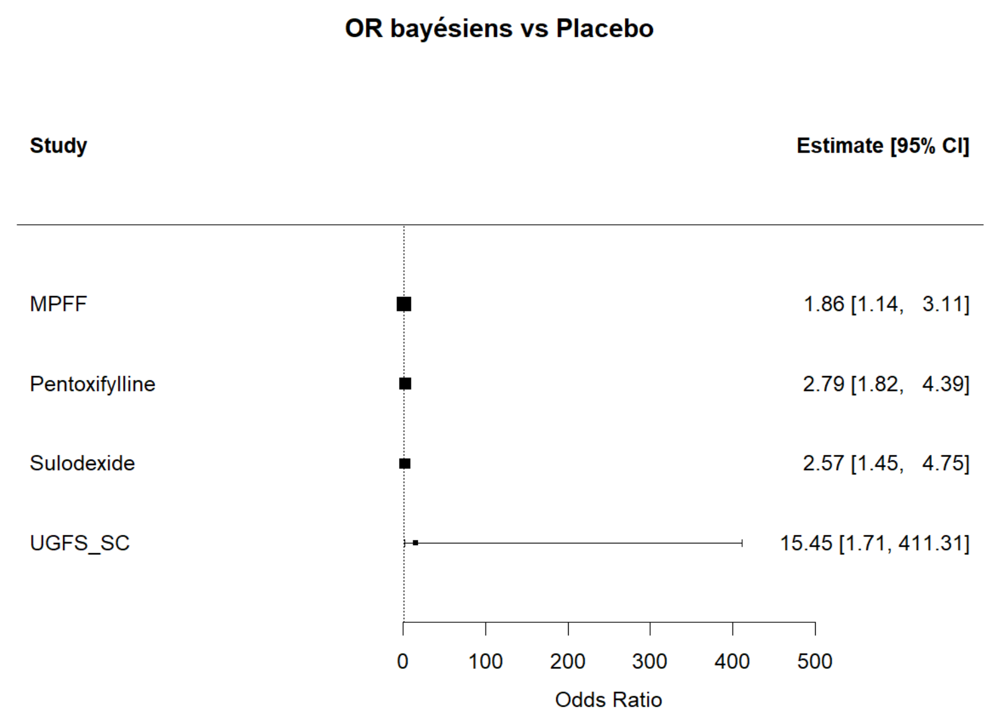
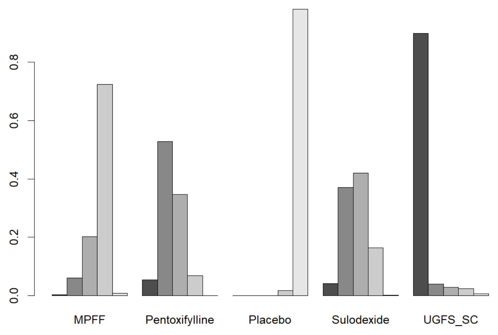

Méta-analyse bayésienne en réseau des ulcères veineux de jambe
« Plusieurs traitements existent, mais presque aucun n’a été comparé directement aux autres. »
Les ulcères veineux de jambe sont des plaies chroniques, longues à cicatriser et coûteuses pour le système de santé. Ce projet compare l’efficacité de plusieurs stratégies thérapeutiques sur un critère commun, la cicatrisation complète, grâce à une méta-analyse bayésienne en réseau de 19 essais cliniques randomisés.
Objectif du projet
L’objectif est d’évaluer dans quelle mesure :
- les traitements pharmacologiques (pentoxifylline, sulodexide, MPFF) améliorent la cicatrisation par rapport au placebo ;
- il est possible de classer ces traitements entre eux malgré l’absence d’essais en face-à-face ;
- une stratégie interventionnelle (l’UGFS, sclérothérapie échoguidée par mousse) peut être intégrée au réseau.
Données et préparation
Les données proviennent de 19 essais randomisés à deux bras. Pour chaque bras, l’effectif total et le nombre de patients cicatrisés ont été extraits. Dix-huit essais comparent un médicament au placebo. Le 19e essai (Bishara, 2025) compare l’UGFS aux soins standards, assimilés au placebo pour relier le réseau.
Traitements comparés
| Traitement | Nature | Essais |
|---|---|---|
| Pentoxifylline | Médicament (hémorhéologique) | 9 |
| MPFF | Médicament (phlébotonique) | 5 |
| Sulodexide | Médicament (glycosaminoglycane) | 4 |
| UGFS | Intervention (sclérothérapie) | 1 |
Méthodologie statistique
- Modèle : loi binomiale, lien logit, effets aléatoires pour tenir compte de l’hétérogénéité entre essais.
-
Estimation :
méthodes MCMC sous OpenBUGS (réseau pharmacologique), puis sous R avec
gemtc/JAGS (réseau élargi à l’UGFS), avec trois chaînes. - Résultats : odds ratios avec intervalles de crédibilité à 95 %, probabilités de classement et valeurs SUCRA.
- Diagnostics : convergence des chaînes (trace plots), hétérogénéité, funnel plot, analyse fréquentiste complémentaire.
Visualisations
Trois visualisations illustrent ces résultats :



Résultats principaux
| Traitement | OR | ICr 95 % | SUCRA | P(1er) |
|---|---|---|---|---|
| Pentoxifylline | 2,77 | 1,81–4,38 | 0,83 | 55,2 % |
| Sulodexide | 2,55 | 1,42–4,68 | 0,74 | 39,3 % |
| MPFF | 1,86 | 1,15–3,10 | 0,43 | 5,5 % |
| Placebo | 1,00 | — | 0,00 | 0,0 % |
| UGFS* | ≈ 15 | 1,71–411 | — | — |
OR : odds ratio vs placebo. ICr : intervalle de crédibilité à 95 %. P(1er) : probabilité d’être le meilleur traitement. Médicaments : réseau initial (18 essais). *UGFS : réseau élargi, un seul essai, résultat exploratoire.
Principaux enseignements
- La pentoxifylline est le médicament le plus efficace, suivie du sulodexide et du MPFF.
- Les trois médicaments sont significativement supérieurs au placebo, et leurs estimations restent stables après l’ajout de l’UGFS.
- L’UGFS ressort première (OR d’environ 15), mais son intervalle de crédibilité est très large : elle repose sur un seul essai et ce résultat reste exploratoire.
- Le principal point de vigilance est la comparabilité des essais, notamment l’assimilation des soins standards au placebo.
Compétences mobilisées
- Biostatistique bayésienne et méta-analyse en réseau (R, OpenBUGS,
gemtc/JAGS). - Méthodes MCMC et diagnostics de convergence.
- Lecture critique d’essais cliniques randomisés.
- Visualisation de résultats (forest plots, rankograms).